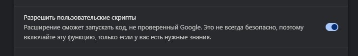
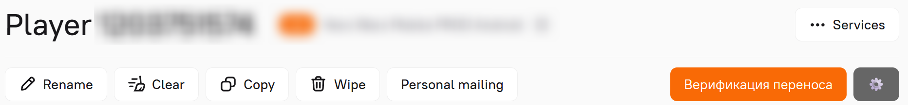

Transfer Validation (beta)
Important note:
Сейчас скрипт находится на стадии тестирования и доработки. Если решите попробовать его, пожалуйста, имейте это в виду.
(хотя я правда пытался как можно лучше его проверить и до этого момента) (＞ｍ＜)
Кроме этого, жду любой фидбек по улучшению/изменению/фиксам в личке или войсом :3
Установка
- Установи расширение Tampermonkey из Chrome Web Store.
- Нажми ПКМ на установленное расширение -> Управление расширениями
- Включи "Разрешить пользовательские скрипты"

- Попроси ссылку на тестовую версию скрипта у o.zakharov 👋
- На открывшейся вкладке нажми "Установить"
После установки скрипт может время от времени запрашивать обновления по мере их выхода
Как пользоваться:
- Перейди в админку основного аккаунта мобильного игрока.
- На странице появится кнопка "Верификация переноса" и кнопка настроек "⚙️":

- Нажми "Верификация переноса".
- Введи ID основного аккаунта (предзаполнено из URL) и ID нового аккаунта.
- Не переключайся на другие вкладки, пока скрипт собирает информацию.
- Ответь на выскочившие попапы.
- Результат скопируется в буфер обмена.
- Просто сделай Ctrl+V во внутреннее примечание тикета.
С помощью кнопки "⚙️" можно настраивать ID сплитов для проверки (по умолчанию: 380,391,425,431). Эта информация локально сохраняется в вашем браузере, поэтому менять её можно редко и по необходимости